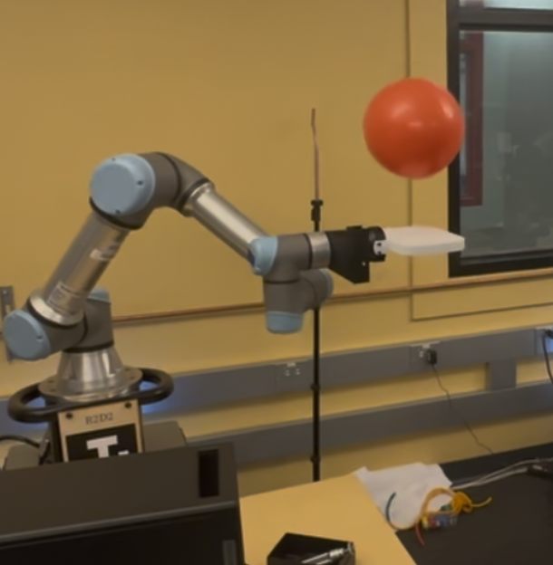
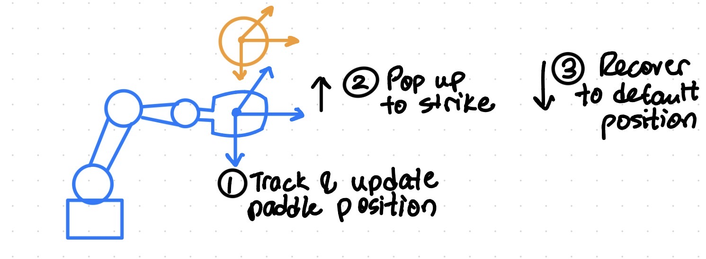

Project Goal
Goal
Our goal was to control an arm to bounce a ball or balloon repeatedly over numerous attempts.
We targeted around 4-6 consecutive bounces as a practical benchmark for robustness and to show the system could truly "control" the balloon rather than getting lucky on a single hit.

We identified the three following things as necessary in order to bounce the ball repeatedly.
This means:
- Track and update the robot's paddle position from ball pose estimates with low latency.
- Pop up to strike the ball or balloon upward.
- Recover down to a base value to prepare for the next upward strike.

Evaluation
Ultimately, we were able to get the balloon bouncing consistently between 3-6 times depending on whether or not the balloon accidentally exited a safe range for the robot to hit. For the ball, we were able to get the bouncing working for 1-2 times. Bouncing a proper ball was more difficult because of the higher velocities, latency issues (Realsense cameras to go beyond 30Hz for RGB), and more force required to lift the ball.